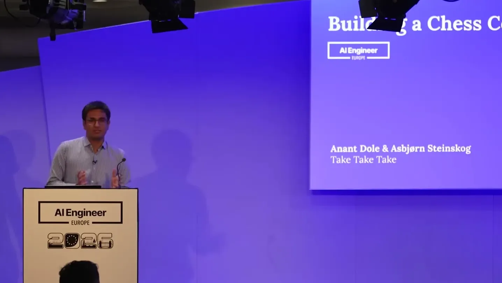
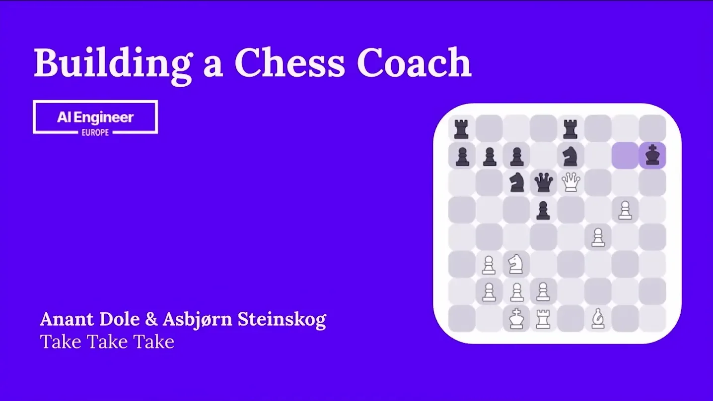
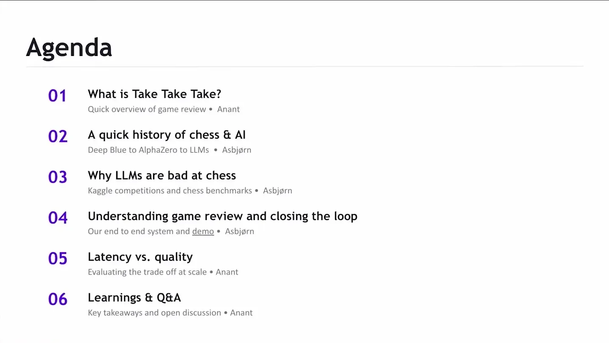
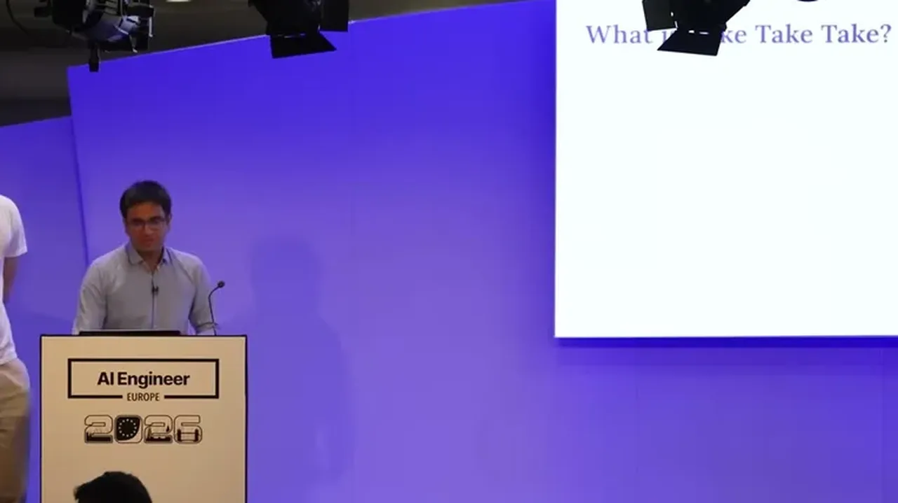
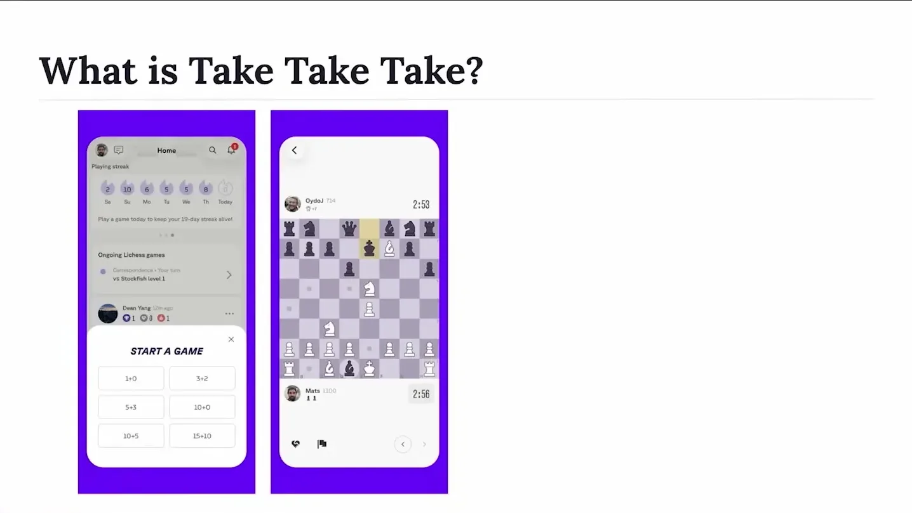
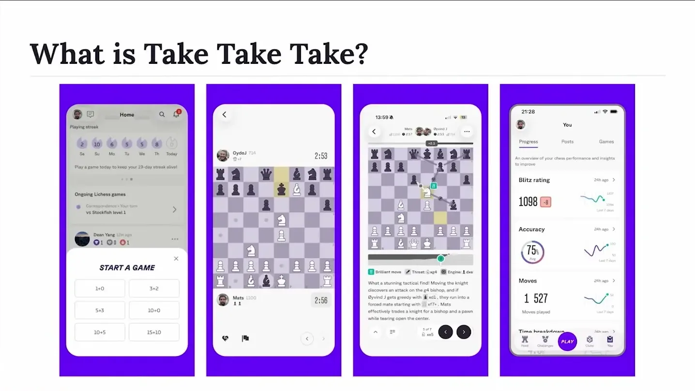
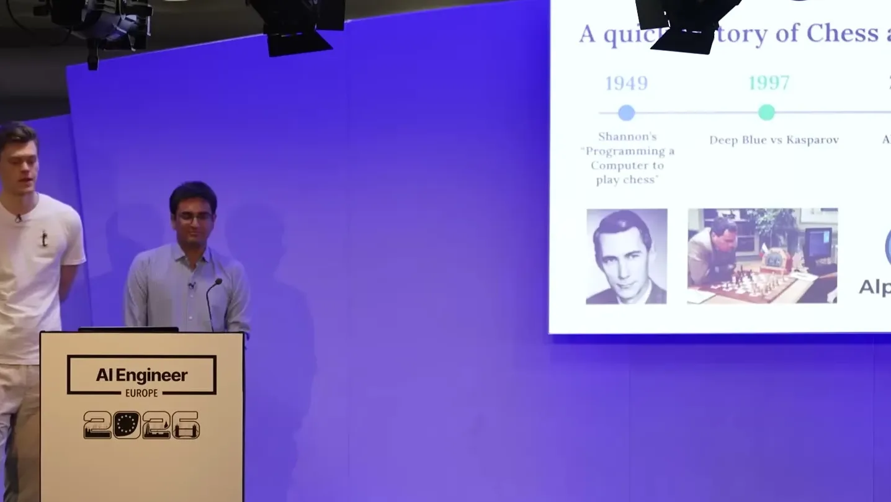
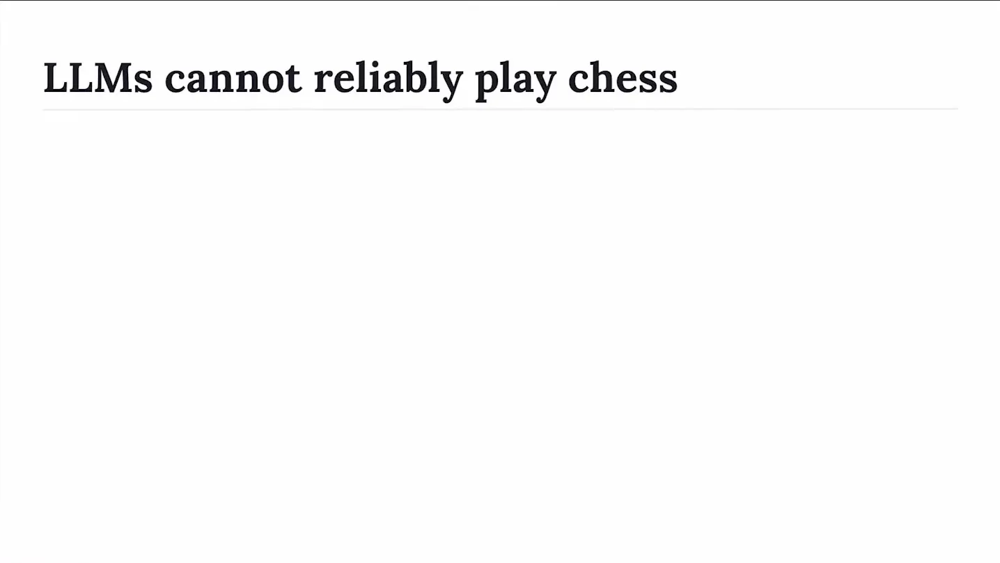
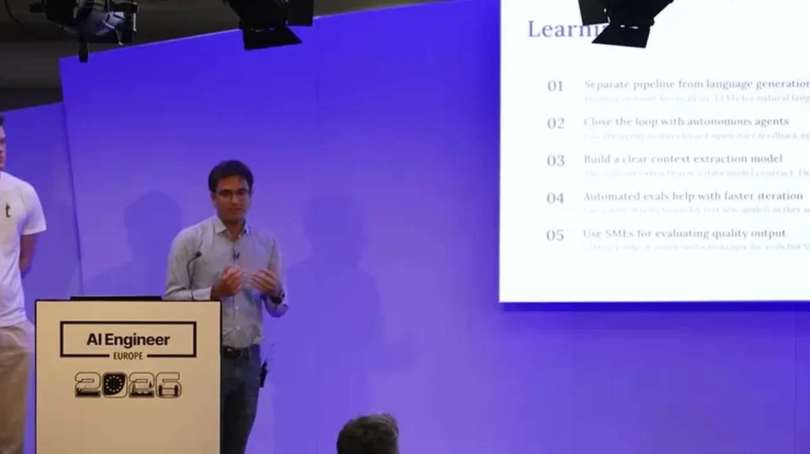
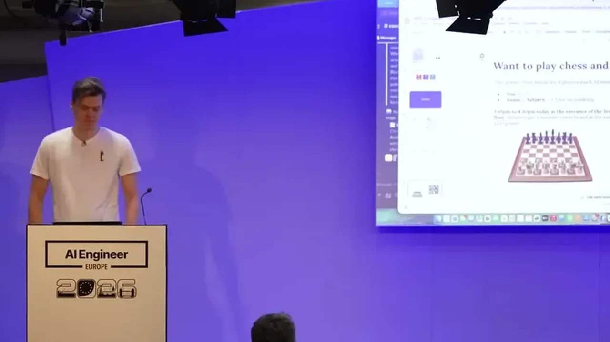

Shows a concrete pattern for grounding an LLM feature in a domain engine (Stockfish evaluations, custom tactical/positional detectors, and a human-move-probability model) so the LLM only translates rather than reasons about chess itself,...
This traces the game-review path from Stockfish/detectors/Maya through the LLM into commentary, and the separate repair loop from a user flag back through the triage skill to a merged PR (ours).
“and people started playing chess against the LLMs, and quickly turned out that they can't really play chess.”
said at 04:41“DeepMind has trained a transformer to instead of predicting the next token, they predict the evaluation based on a chess position, where they've trained it on millions of chess positions to uh Stockfish evaluations pair.”
said at 06:15“the LLM's job is only to translate this information uh into English, because we really don't want it to try to figure out too much on its own, because it quickly leads to hallucination.”
said at 08:18“they have trained a chess engine, uh it's a neural network that predicts the moves that humans would play in certain positions.”
said at 07:47“Channel is a new feature in the research preview that is essentially an MCP server that can inject events into a running Cloud Code session.”
said at 10:19“It runs a commentary triage skill that we created that outlines its process how it should go about to investigate what's going what's wrong in the position.”
said at 10:50“So we we're aiming for sub 3 seconds to generate our coach sort of feedback. How do we do this? We use Gemini 3 flash.”
said at 12:54“Currently we have 16 different scenarios that we created. These are around themes like tactical patterns, blunders, and sort of limiting hallucination.”
said at 13:56“we we ran all three models Gemini, Cloud, and and GPT-5 and you know typically Gemini flash is about 75%.”
said at 14:58“Number one, you really important to separate that sort of data pipeline from the language generation.”
said at 15:59The team treats the LLM strictly as a translation layer over deterministic chess analysis rather than a reasoning engine, which sidesteps the hallucination problem other LLM-chess demos hit -- this pattern (symbolic backend + LLM-as-narrator) is likely reusable for other domains where an LLM's job is to explain a decision made by an existing expert system (ours).










| Stance | Claim | t |
|---|---|---|
| asserts | When people started playing chess against LLMs, it quickly became clear the models can't really play chess. | 04:41 |
| asserts | The LLM's role is limited to translating grounded structured data into English rather than reasoning on its own, because that quickly leads to hallucination. | 08:18 |
| asserts | DeepMind trained a transformer to predict position evaluations instead of next tokens, reaching grandmaster-level play, though it can't explain chess since it wasn't trained on language. | 06:15 |
| asserts | A research-preview 'Channel' feature is an MCP server that can inject events into a running Cloud Code session. | 10:19 |
| asserts | A commentary triage skill outlines the agent's process for investigating what's wrong with flagged commentary. | 10:50 |
| recommends | The team targets sub-3-second coach feedback generation using Gemini 3 Flash. | 12:54 |
| asserts | The team built 16 chess scenarios for evals covering tactical patterns, blunders, and hallucination limits. | 13:56 |
| asserts | Across the eval scenarios, Gemini Flash passes about 75%. | 14:58 |
| asserts | The Maya research model predicts the moves a human at a given rating would actually play, rather than the objectively best move. | 07:47 |
| recommends | The team's top lesson is to separate the data-extraction pipeline from language generation. | 15:59 |
Machine-readable copy embedded in this page (script#ontology) and in the corpus ontology.